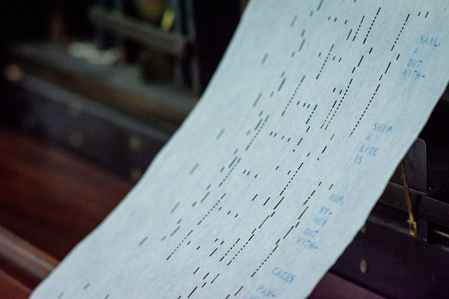
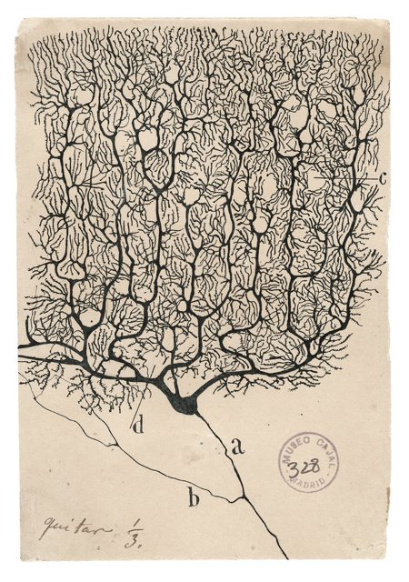
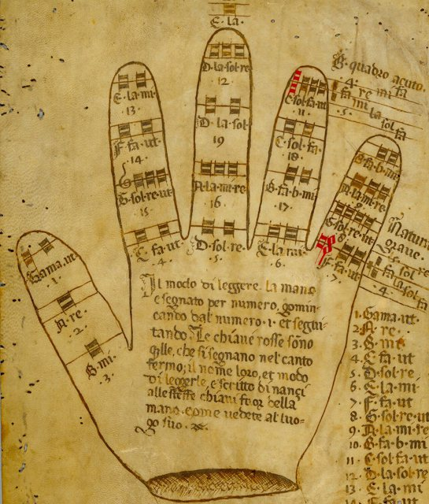
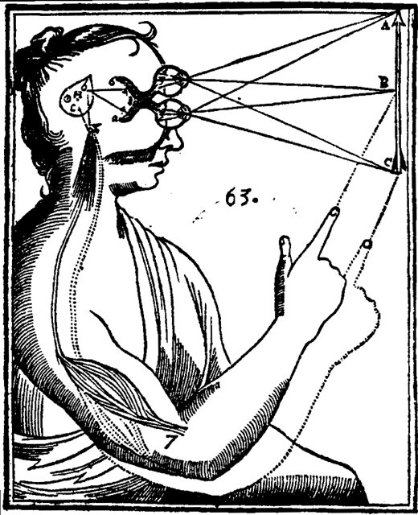
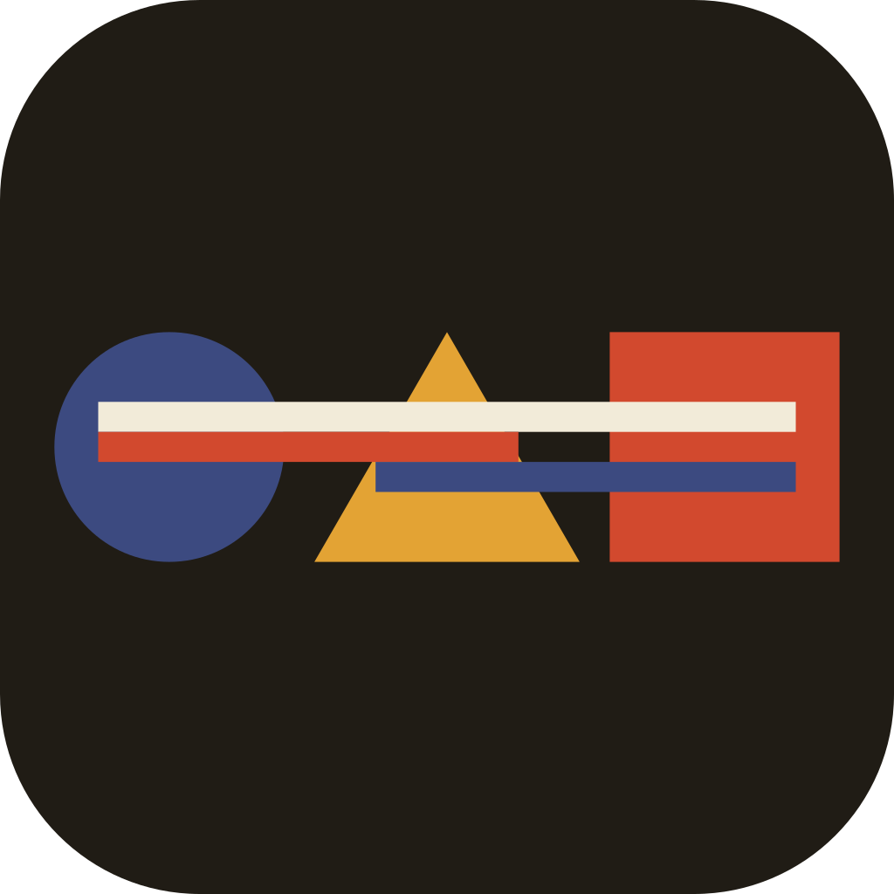
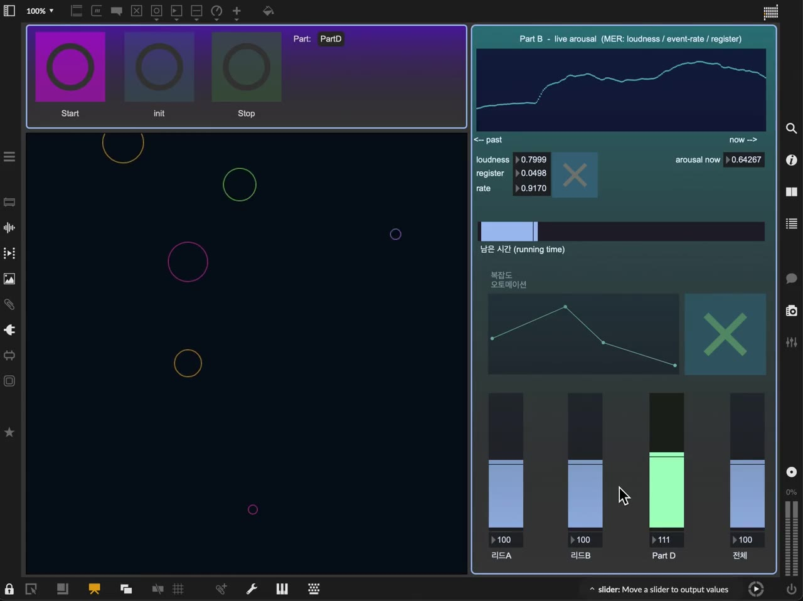

Thinket 구 studyForest
대화를 질문들의 숲으로 다시 세우는 LLM 학습 도구다. 답변의 한 대목에 형광펜을 그으면 그 자리에서 가지가 자라고, 뿌리에서 지금까지의 경로만 모델의 맥락이 된다. 무엇이 맥락으로 들어갈지는 학습자가 보고 고른다.
Yoontae Lee · music_ing Lee · Quale
음악을 즐겨 듣고, 부르고, 만들고, 연구합니다.
음악이 먼저였다. 듣고, 부르고, 만들다 보니 그 음악을 듣는 마음이 궁금해졌고, 그래서 심리학을 공부한다. 처음 붙든 물음은 왜 leading tone이 ‘leading’ tone인가였다. 같은 음을 듣고도 누군가는 이끌리고 누군가는 그렇지 않다면, 이끎은 음표가 아니라 듣는 사람의 마음과 뇌에서 일어나는 일일 것이다.
그 물음은 네 갈래로 뻗었다. 사람이 음악을 듣는 방식을 모델에 옮기는
   
musicking any activity involving or related to music performance, such as performing, listening, rehearsing, or composing.
대화를 질문들의 숲으로 다시 세우는 LLM 학습 도구다. 답변의 한 대목에 형광펜을 그으면 그 자리에서 가지가 자라고, 뿌리에서 지금까지의 경로만 모델의 맥락이 된다. 무엇이 맥락으로 들어갈지는 학습자가 보고 고른다.

맨날은 오늘 할 일을 적는 앱이다. 하루가 지나면 그날은 달력에 도형 하나로 남는다. 다 해낸 날은 원, 남긴 일이 있는 날은 삼각, 오늘과 아직 오지 않은 날은 사각이다. 달력에서 붉게 칠해지는 칸은 오늘 하나뿐이다.

인간성에 대한 예술 철학을 확률과 무선화 로직으로 실험한 작업이다. 조성이라는 최소한의 틀 안에서 네 악기가 즉흥하고, 그 음색이 떠올린 색과 물방울의 심상을 lcd 위에 퍼지는 파동으로 옮겼다.